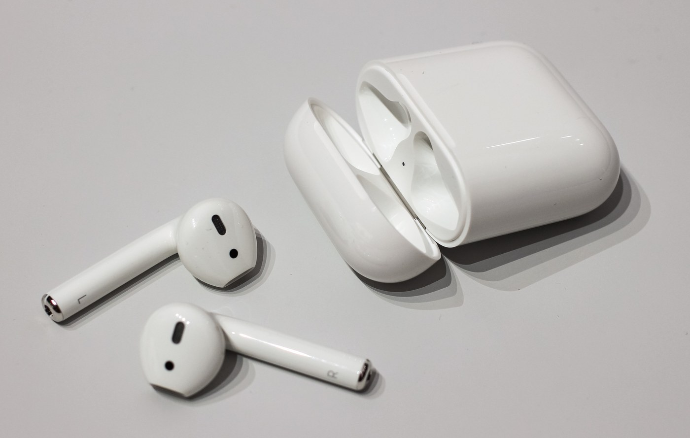

The Autopsy Report · Device #052
AirPods (2nd generation)
The white earbuds that became a cultural uniform. Under the familiar plastic: Apple's first H1 chip, batteries the size of a grain of rice, and a construction method that treats repair as a rumor.
What is this thing?
The AirPods (2nd generation) are Apple's truly wireless earbuds — two white buds that live in a pocketable charging case and talk to your phone over Bluetooth. This generation (model A2031) was announced on March 20, 2019, and its headline feature was the H1 chip: Apple's first headphone chip, enabling hands-free “Hey Siri” and faster switching between devices. MacRumors
An optional wireless charging case was offered alongside the standard Lightning-charging case. MacRumors
Not yet on our bench
Straightforward honesty first: BareBoard has not possessed, disassembled, tested, booted, or touched the firmware of this unit. We don't have one on the bench yet. Everything below is built from public records — FCC filings, manufacturer material, datasheets, manuals, and published teardowns — with every claim linked to its source and graded for confidence. When a fact genuinely requires our hands on hardware (boot logs, our own photos, exact board revision of a future unit), we say so out loud.
That framing is what makes publishing now legitimate: this is a public-records autopsy, and it will grow into a bench autopsy the day a unit lands on our desk.
A short history
- March 20, 2019Apple announces the 2nd-generation AirPods with the H1 chip and hands-free Siri. MacRumors
- March 20, 2019The FCC grants Apple's filing for model A2031 (FCC ID BCG-A2031) the same day. FCC filing
- March 29, 2019The FCC's internal photos, external photos, user guide, and test reports become public — and iFixit's teardown lands, exposing the Apple 343S00289 chip believed to be the H1, 93 mWh batteries in each bud, and a glued-shut construction that earns a repairability score of zero. FCC filing · AppleInsider · Gizbot
The outside
White plastic, minimal seams. Two earbuds with long stems sit in a flip-top charging case; the case has a Lightning port on the bottom for wired charging, a small round setup button on the back for pairing and resets, and a status LED on the front. MacRumors

The board
There is no “main board” in the conventional sense — each earbud packs its electronics into a tiny rigid-flex assembly wrapped around a 93 mWh battery, and the charging case holds its own small board with the case battery and charging circuitry. iFixit's teardown found an Apple-marked chip, 343S00289, believed to be the H1 — but the whole assembly is glued together so thoroughly that opening a bud destroys it. AppleInsider
The FCC's internal-photo exhibit (public since March 29, 2019) shows the same dense packaging from the regulator's side. FCC filing
A guided tour
- The bud. Speaker and microphones at the top, the stem housing the battery, antenna, and the H1 — everything potted in glue.
- The case. Hinge, charging contacts for the buds, Lightning port, setup button, LED — and its own battery to recharge the buds on the go.
- The metal cap. The shiny ring at the bottom of each stem is the charging contact that mates with the case. AppleInsider
Under the microscope: the chips
What's inside, what each part does, and how sure we are. Confirmed means a primary source (FCC exhibit, manufacturer material, datasheet). Likely means well-corroborated public records. Apple publishes no datasheets for its own chips — that's a documentation gap in the industry, not the research.
| Chip | What it does | How we know | Dig deeper |
|---|---|---|---|
| Apple 343S00289 believed to be the H1 |
The headphone system-on-chip: Bluetooth audio, “Hey Siri” listening, fast device switching. MacRumors | Likely iFixit's teardown reads the 343S00289 marking and identifies it as the H1; Apple itself confirms the H1 at the product level. AppleInsider | No public datasheet was found — Apple does not publish datasheets for the H1. |
| Earbud battery 93 mWh per bud |
Powers one earbud. | Likely Reported by the iFixit teardown. AppleInsider | — |
Still unidentified in public records: the exact Bluetooth RF front end, the charging-case controller, and the case battery's part number. Nothing else on the bud's assembly is publicly named.
The government's file on this device
Apple's FCC filing for the left bud — FCC ID BCG-A2031, model A2031 — was granted on March 20, 2019. The public exhibits (internal photos, external photos, user guide, test reports) became available on March 29, 2019. The filing lists two Bluetooth authorizations with output powers of 9.73 mW and 21.04 mW. FCC filing
What's missing: the schematic, block diagram, operational description, and antenna specifications are held as permanent confidential material — the standard trade this system makes: public photos, private blueprints. FCC filing
Browse the file yourself: filing page
Debug & service modes
Our posture: we listen, we don't knock. We document only publicly verified, user-facing service behavior — nothing that bypasses locks, defeats authentication, or extracts firmware.
Factory reset (public, user-facing). Put the buds in the case, close the lid, wait 30 seconds, open the lid, then press and hold the setup button on the back of the case for about 15 seconds — the status light flashes amber, then white. Apple Support, via secondary
No public debug interface. No serial console, JTAG header, or documented diagnostic mode for these buds appears in any public record we found. Firmware updates happen automatically when the buds are near a paired, Wi-Fi-connected iPhone — there is no manual update button. Community documentation
What the public record says
Zero for repair. iFixit's teardown gave the 2nd-generation AirPods a repairability score of 0 out of 10 — the buds are glued shut and opening them is destructive. When the tiny batteries wear out, the practical outcome is replacement, not repair. Gizbot · Gadgets360
The H1 is real, the marking is inferred. Apple confirms the H1 chip at the product level; the specific marking 343S00289 comes from teardown observation, reported as the teardown team's belief — so we keep the identification at Likely, not Confirmed. AppleInsider
What we didn't do
- We have not possessed, disassembled, tested, or booted this device.
- We have not extracted, modified, shared, or reverse-engineered its firmware.
- We document only publicly verified interfaces and user-facing modes — read-only, no lock bypass, no authentication defeat, no credential or key material.
- Anything below marked as unknown stays unknown until the bench says otherwise.
By the numbers
- Model: A2031 (FCC ID BCG-A2031)
- Chip: Apple H1 (teardown marking 343S00289 — Likely)
- Battery: 93 mWh per earbud (teardown-reported)
- Radio: Bluetooth; FCC-listed output powers 9.73 mW and 21.04 mW
- Announced: March 20, 2019; FCC grant the same day
- Repairability: 0/10 (iFixit)
Words to know
Every term this page uses, in plain English. No prior knowledge required.
- System on a chip (SoC)
- The whole computer — processor, radio, and audio hardware — on one piece of silicon. Apple's H1 is one.
- Bluetooth
- The short-range wireless standard the buds use to talk to your phone.
- mWh (milliwatt-hour)
- A tiny unit of battery energy. 93 mWh is roughly a grain-of-rice-sized battery's worth.
- Repairability score
- iFixit's 0–10 rating of how fixable a device is. Zero means effectively disposable.
- FCC ID
- The ID the FCC assigns to each approved wireless product. Punch it into fccid.io and the whole public filing comes up.
- Teardown
- Taking a device apart to document what's inside — usually destructively for glued gadgets like these.
Sources & confidence
- FCC filing BCG-A2031 (grantee Apple Inc., model A2031, grant March 20 2019, exhibits public March 29 2019, output powers, confidentiality holdings): primary source — Confirmed.
- H1 chip, hands-free Siri, wireless case option, March 20 2019 announcement: Apple's product claims via MacRumors launch coverage — Likely.
- 343S00289 = H1, 93 mWh batteries, glued construction, 0/10 repairability: iFixit teardown via AppleInsider/Gizbot/Gadgets360 — Likely (the chip identification is the teardown team's belief, so it stays Likely).
- Factory reset procedure: Apple Support documentation via secondary — user-facing, read-only.
- Anything not listed here is unknown until the bench says otherwise. We'll say so, out loud, when that's the case.
Serial numbers and QR codes are blacked out of every published photo. Raw originals stay private.
Legal note. BareBoard is an educational project. Everything on this page comes from public records — FCC filings, manufacturer material, datasheets, and published teardowns — plus our own analysis of those records. We don't publish, host, or distribute firmware, keys, passwords, or credentials. Product names and trademarks belong to their respective owners and appear here only to identify the hardware. If you believe anything here infringes your rights, contact us and we'll address it promptly.